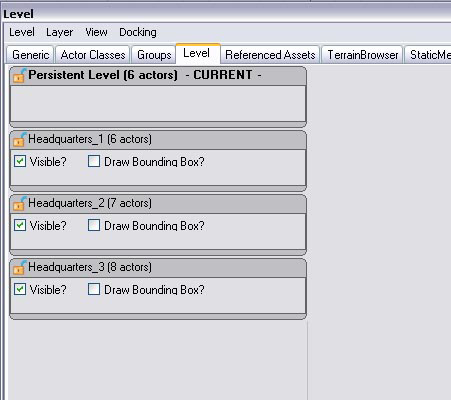
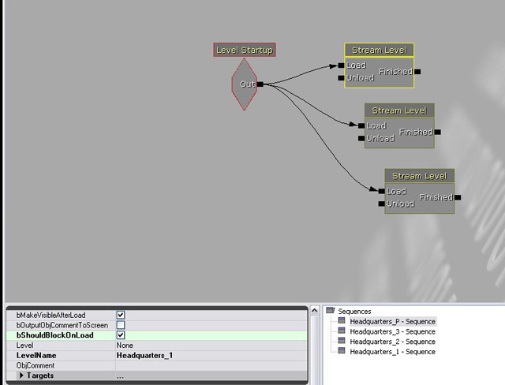
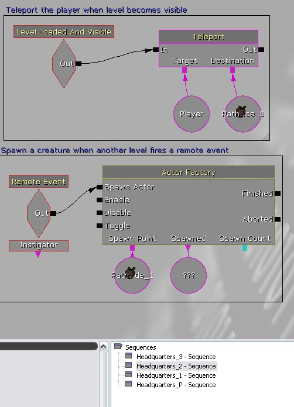

UDN
Search public documentation:
LevelStreamingHowToCH
English Translation
日本語訳
한국어
Interested in the Unreal Engine?
Visit the Unreal Technology site.
Looking for jobs and company info?
Check out the Epic games site.
Questions about support via UDN?
Contact the UDN Staff
日本語訳
한국어
Interested in the Unreal Engine?
Visit the Unreal Technology site.
Looking for jobs and company info?
Check out the Epic games site.
Questions about support via UDN?
Contact the UDN Staff
使用关卡动态载入
概述
永久性关卡
- 创建一个新的地图，在看不见的地方添加一个小的立方体(这用于确保它是引擎到目前为止考虑的关卡，这个步骤只需执行一次）。
- 在您想让玩家开始运行的任何地方放置一个playerstart。注意，在永久性关卡中，这个playerstart看上去是浮动在空间中的，但是一旦您动态载入了一个关卡，应该把它移动到第一个动态载入的关卡中的任何您想让它开始播放的地方。当开始播放游戏时，我们将会启动永久性关卡，但是事实上玩家会在您其中的一个动态载入的关卡中移动，而不是在永久关卡中。
- 保存地图，为了达到组织管理目的，您需要为它设置一个名称，并把它标记为永久性关卡。比如，Headquarters_P。
- 打开通用浏览器，并点击“关卡”标签。这里您必须列出您想动态载入的每一个关卡。如果Headquarters由三个地图组成，则需要把那三个地图都添加到这里。这可以通过选择Level，然后Level(关卡)的下拉菜单中选择New From File(从文件中添加新关卡)。您添加的动态载入关卡的顺序是没有关系的，但是以后的虚幻编辑器?将允许您重新排列关卡顺序来组织管理关卡。最终您应该可以获得如下图所示的东西。
- 注意，将会为您提供关于根据距离或者根据Kismet动态载入您的关卡的选项:
- 距离动态载入将基于从关卡原点到玩家的距离来加载和卸载关卡。
- Kismet动态载入允许关卡设计人员通过Kismet脚本加载及卸载关卡，因此这个方法比较常用。

实例1: 添加了三个关卡后的关卡浏览器 如果您在编辑器窗口或Kismet中进行改变时，标记为"CURRENT(当前)"的关卡是您正在修改的关卡。这允许您很容易地在多个地图上工作，只要它们都是可写的即可。如果您按下保存按钮，它将会保存CURRENT(当前)关卡(或者您可以通过点击Save All Levels(保存所有关卡)按钮来保存当前永久性关卡中包含的所有关卡)。 可见性复选框允许您在编辑器中隐藏及显示关卡，尽管这仅用于可见性控制目的，和当游戏运行时关卡是否需要动态地在入到游戏中没有关系。然而，如果您重新构建关卡，那么在这里不可见的关卡将不会受到影响，所以如果您的关卡非常复杂，这个工具是节约时间的一种很好的方式。 为了永久地从您的永久性关卡中移除动态载入的关卡，可以通过从浏览器中的Level(关卡)下拉菜单中选择Remove level from world(从世界中删除关卡)选项来实现。如果您需要改变关卡的动态载入方法，可以先删除关卡然后重新添加它，并选择您希望在动态载入时想使用的方法。目前，"Load(加载)" 和"Unload(卸载)"功能还处于无效状态，同时Lock/Unlock(锁定/取消锁定)以及Draw Bounding Box(描画边界盒)标志也是无效的。 实例2: 右击并选择"Make Current(使成为当前关卡)"来修改您正在进行处理的关卡。
实例2: 右击并选择"Make Current(使成为当前关卡)"来修改您正在进行处理的关卡。
永久性关卡快速指南
- 在虚幻编辑器?中创建一个新的地图。
- 添加一个建大的BSP几何体，比如立方体。
- 添加一个playerstart。
- 添加您想动态载入到Level Browser(关卡浏览器)中的关卡。
- 保存并命名地图
通过Kismet脚本进行动态载入
- 打开Kismet
- 放置一个关卡已加载事件(New Event (新建事件)-> Level Loaded(关卡已加载))
- 根据您所拥有的关卡放置尽可能多的关卡动作(New Action[新建Action] -> Level[关卡] -> Stream Level[动态载入关卡])。
- 通过点击Stream Level(动态载入关卡)动作并在LevelName(关卡名称)处输入关卡名称来把您的每个关卡的名称添加到动态载入关卡动作上。
- 把关卡已加载事件连接到Stream Level(动态载入关卡)动作上的每个Load(加载)输入端上。

实例3: 通过Kismet加载三个动态载入关卡 这时，您应该可以启动您的永久性关卡并探索您的动态载入关卡了，只要它们在载入时设置为可见状态。如果有一些由于性能原因等没有标记为动态载入的关卡时，您将需要设置触发器或其它的方法使它可见。比如，Headquarters_3对于玩家来说或许太远以至于不能看清它的内部，所以为了节约资源，应该在稍后需要时在设置它可见。有一个称为Change Level Visibility(改变关卡可见性)的动作，它也位于New Action(新建动作) -> Level(关卡)下。这个动作允许您在您的方向上隐藏及取消隐藏动态载入的关卡。如果您在动态载入关卡动作中使用Unload(卸载)事件，关卡将会从内存中取消加载，尽管这样您将需要在使它可见之前使用Load(加载)事件，但这样却做可以释放大量的内存。脚本动态载入快速指南
- 打开Kismet
- 添加一个Level Loaded(关卡已加载)动作和一个StreamLevel(动态载入)关卡动作，把启动事件连接到Load(加载)的输入端。
- 右击动态载入的关卡，把您要动态载入的关卡的名称添加到"LevelName(关卡名称)"文本域中，并选中bMakeVisibleAfterLoad标志。
- 保存关卡，启动游戏。
基于距离的动态载入
 实例4: 设置基于距离的动态载入
实例4: 设置基于距离的动态载入
距离动态载入快速指南
- 打开通用浏览器
- 点击Level(关卡)标签
- 从通用浏览器的文件菜单中选择Level(关卡)->New From File(从文件中新建)，并选择您想动态载入的关卡。
- 选择“Distance(距离)”动态载入
- 请确保选中了"Persistent Level(永久性关卡)"，展开右侧的WorldInfo(世界信息)属性。右击WorldInfo_#并选择"Edit Properties(编辑属性)"。
- 现在应该打开了属性菜单，展开WorldInfo，然后再展开StreamingLevels。
- 输入从玩家到关卡的距离，以游戏标尺为单位，该距离用于指出您要将关卡动态载入到世界是所处的距离，把原点改为您想在世界空间中测量距离的位置。
使用动态载入关卡
加载和事件
当加载关卡时，添加一个新的Kismet动作来替换一般用于使很多事件开始运转的Level Startup(关卡启动)动作。这个动作称为Level Loaded And Visible(加载的关卡并可见)。它的基本作用原理和Level Startup(关卡启动)类似，但是设计它的目的是想将它和Change Level Visibility(改变关卡可见性)动作结合使用。无论何时，当使得一个关卡对于玩家可见时，通过CLV动作或者通过动态载入它(如果选中了bMakeVisibleAfterLoad标志)，这将会触发Loaded And Visible(加载和可见)动作。当这个和Remote Events(远程事件)结合使用时，它允许每个动态载入的关卡是他自己的本身独立实体，可以根据需要进行加载和卸载并且可以从其它动态载入的关卡接受或向其发送事件。以下示例中，一旦当主关卡可见，则玩家立即发生电传，同时当触发了另一个关卡的远程事件时将会产生一个角色。
*实例5: 动态载入关卡的脚本实例。在关卡间移动Actors
自从DEC 2007 QA-Approved版本后，您可以通过简单的从一个关卡中复制一些Actors(Ctrl + C)，改变当前关卡，然后粘帖(Ctrl + V)它们，便可以把Actors在关卡间移动。然而，这使用了和 MoveSelectedActorsToCurrentLevel 类似的途径，因为为了解决Actors间的潜在引用，必须把它们序列化出到一个 复制的 世界。这个功能在变更列表#203995 和 #206418中引入。 在版本JAN 2007 QA-Approved之前的版本中，当您一次移动大量Actors时，您或许经历过 用光内存 的问题；但是当我们提高了编辑器处理缓冲的性能(和内存应用)时修复了这个问题(变更列表 #206829)。 同时，在版本JAN 2007 QA-Approved中，您可以通过关卡浏览器中的 New Level from Selected Actors(从选中的Actors新建关卡) 按钮来把Actors移动到新建的关卡中(变更列表#206324)。优化
由于性能和工作流程的原因，大多数开发人员会发现使用的动态载入关卡越多，所获得的效果越好。然而，目前这个功能将会受到系统限制因素的影响，即放置到一个关卡中的actors不能直接地被另一个关卡的Kismet所引用。尽管可以通过触发和接受远程事件来触发不同动态载入关卡间的事件，但是目前还不能是进行直接地跨关卡引用actors。在上面的图片中，Pathnode_0 和 Pathnode_1必须放置在和这个脚本所在的同一个关卡中，在这个例子中是Headquarters_2。如果这些节点中的任何一个在HQ_1 或 3中，这些动作将不会有效。 自从2007年12月的QA-Approved版本开始，提供了一个功能，可以使得现有关卡切分为动态载入的块变得更加的简单。- 在世界中选择一组actors。
- 从关卡浏览器的 Level(关卡) 中选择 New Level from Selected Actors(从选中的Actors新建关卡) 。
- 这将在磁盘上将会创建一个新的动态载入的关卡并被添加到世界中，并且那些选中的actors将会被移动到新建的关卡中。